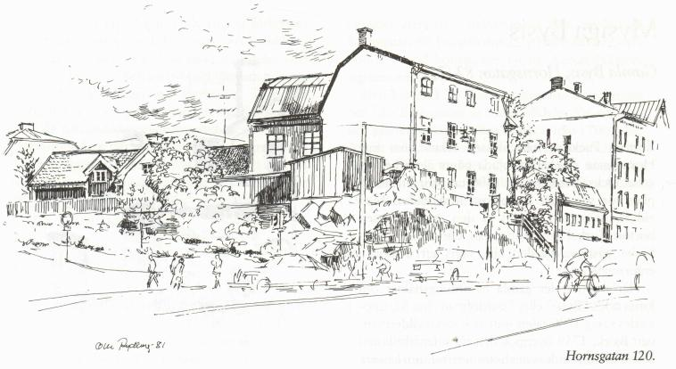

|

Det verkar som om det i dag råder osäkerhet om gamla Hornskrokens lokalisering. I "Stockholms Gatunamn" omnämns gatan såsom tidigare befunnen "i närheten av Ansgariegatan". Men att gatstumpen framför Hornsgatan 120:s östsida är rester av Hornskroken behöver ingen betvivla. Huset hörde dock förr, åtminstone geografiskt, till kvarteret Mullvadsberget, som når ned till Varvsgatan. När Ansgariegatan bröt igenom berget hamnade fastigheten mera inom kvarteret Uven Mindre, som sträckte sig från Ringvägen i öster till Hornskroken i väster. Området fick mot Ansgariegatan en naturlig avslutning. Av denna yttersta tomtmark skapades ett självständigt kvarter, som döptes till Läkten. Resten av Uven Mindre bytte namn till Tapeten. Meningen var förstås att alla kåkarna inpå Ansgariegatan skulle rivas och ersättas med nybyggen. Ett obrutet komplex av hyreskaserner hade därefter kunnat växa fram mellan Ringvägen och den nyöppnade gatan. Av pietetsskäl eller av annan orsak kom de gamla husen att stå kvar med den felaktiga länken Hornskroken på diagonalen genom området. Kvarteret Läktens hus har inte varit försäkrade hos Stockholms Stads Brandstodsbolag. Där känner man inte heller till om fastigheterna haft försäkring i något annat bolag. Byggnadsår för Hornsgatan 120 och husen omkring finns det sålunda inga noteringar om. Inte heller stadsarkivet ger besked om deras tillblivelse. Arne Munthe nämner i "Västra Södermalm från mitten av 1800-talet" att Västra järnarbetarnas fackförening hade lokal i nummer 120. I dag hör Svenska Bleck och Plåtslagareförbundet till husets hyresgäster. Här diskuteras fackfrågor under det brutna plåttaket, över vilket branschmän rest konstfärdiga rökhuvar med svängande flöjlar. Stolta spejar de som riddarvakter ut över nejden. Ett faktum som ingen ifrågasatt är att det dominerande stenhuset vid branten en tid hyrdes ut till Maria församling. Här inrättades nämligen år 1845 en fattigskola för Södermalms barn. Huset ägdes då av bomullsfabrikören Johan Petter Levin. Han bodde redan 1837 på adressen Hornskroken 1 (Hornsgatan 120). Den egentliga skolan inrättades senare Hartwigska huset vid Timmermansgatan 28. Där skulle Maria folkskola utvecklas vidare under skolöverstyrelsens hägn. Det anknytande, sörgårdsrara faluröda trähuset vid Ansgariegatans avtrafikerade och grönskande lilla stråk, ser mera ut att höra hemma i Sorundas jordbruksbygd än inne i stenstaden.
Varvsgatan korsade förr Hornsgatan och ändade med ett järnräcke ovanför dåvarande järnvägen, vilken löpte nedanför Hornsgatan. Banan drogs in sedan leden över Årstabron var klar 1929. Hornstullsreviret patrullerades på 1920-talet av den beryktade polisen "Spisrakan". Om honom berättas det att han en dag stod och hängde med armarna stöttade mot räcket vid Varvsgatan. Hatad av traktens busar blev han då utsatt för ett riskabelt attentat. Två av hans antagonister smög på den intet ont anande polismannen bakifrån, grabbade tag i hans ben och slängde honom över staketet. Huruvida han skadade sig i fallet ner mot banvallen har jag inte hört. Kanske står saken noterad i något polisprotokoll. Stadens vakthavare på Södermalm hade det inte lätt förr i världen. |
{kind=link}